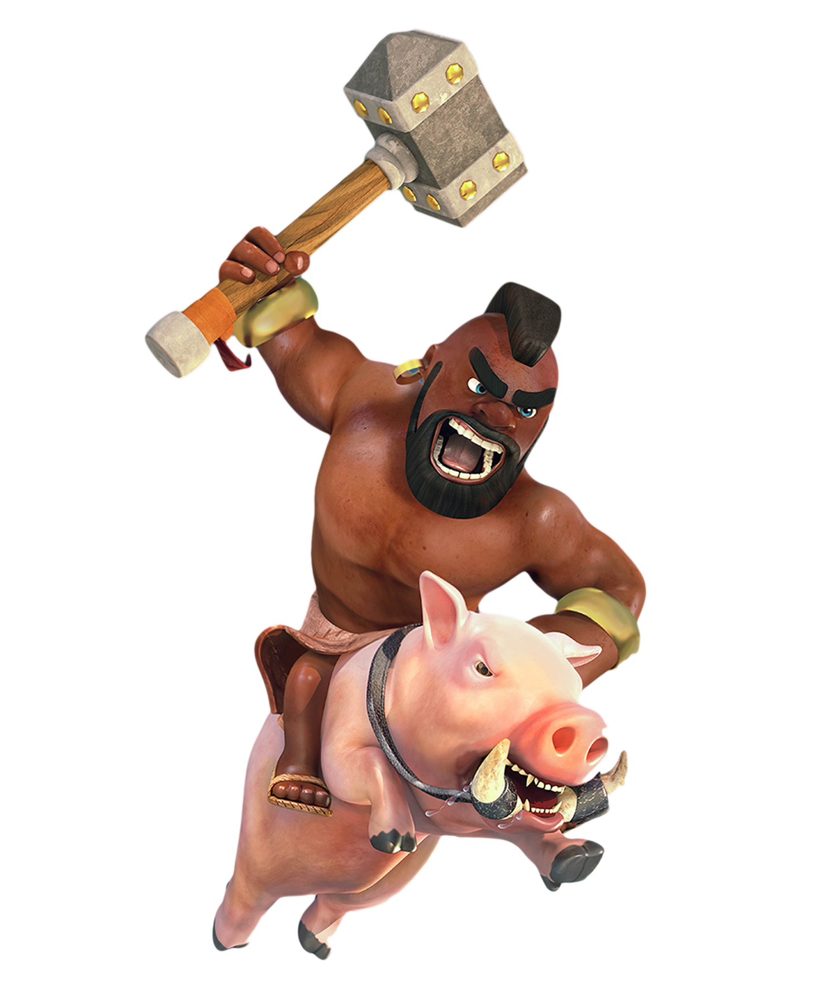

Corredor
O corredor é uma tropa ágil que ignora muros, saltando sobre eles e causando um dano incrível a defesas, tornando-os uma das melhores tropas para guerra, onde os atacantes geralmente procuram derrubar defesas e ir direto para o Centro Da Vila.
Clique Aqui para saber mais → 